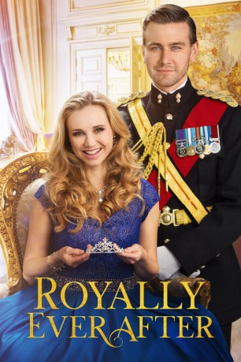

#11712 Royally Ever After - Ich heirate einen Prinzen!
 gesehen am 14.09.2019
gesehen am 14.09.2019
 
 IMDB-Wertung: 5.9 / 10
IMDB-Wertung: 5.9 / 10  Metascore: 0
Metascore: 0 
Sara, eine Lehrerin aus New Jersey hat ihren Traummann gefunden. Als ihr Freund Daniel sie bittet seine Frau zu werden, scheint das Glück perfekt. Doch ihr Leben steht plötzlich Kopf, als er ihr beichtet, Prinz der kleinen Monarchie namens St. Ives zu sein. Um seine Eltern von der Hochzeit zu überzeugen, muss Sara alles tun, um eine perfekte Prinzessin zu werden. Zum Glück hat sie ihre zukünftige Schwägerin an ihrer Seite.
Jahr: 2018
Dauer: 83 Minuten
FSK: 6
Land: USA Studio: The Hallmark ChannelTonspuren: DD5.1 - ,
Untertitel: Deutsch,
Auflösung: 1080p (1920x1080) Größe: 4270 MB
Genre: Komödie
Regisseur: Lee Friedlander
Drehbuch: Duane Poole, Gary Goldstein, Aury Wallington, Aury Wallington
Soundtrack: Daniel Belardinelli
Darsteller:
- Fiona Gubelmann als Sara Dimarco
- Torrance Coombs als Prince Daniel
- Carmen Du Sautoy als Queen Patricia
- Fiona Bell als Marie Dimarco
- Rebekah Wainwright als Princess Fiona
- Senan Jennings als Simon
- Kimberly Leemans als Caitlin
- Donna Anita Nikolaisen als The Countess
- Barry McGovern als King Edmond
- John Guerrasio als Bert Dimarco
- Paul Byrne als Reporter in Café
- John Carty als Gardener
- Louisa Dolan als Tessa
- Peter Doyle als Chauffeur
- John Faulkner als Jackson
- Sadhbh O'Donovan als Willa
Datei: X:\2018(N-Z)\Royally Ever After - Ich heirate einen Prinzen! (2018, FSK6, 1920x1080).mkv seit 14.09.2019
Festplatte: HD 2018(G-Z)-2019(A-Z)
 Es gibt insgesamt 172 Filme in der Gruppe '2018(N-Z)'
Es gibt insgesamt 172 Filme in der Gruppe '2018(N-Z)'